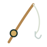
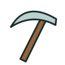
Picareta Simples
simplePickaxetool · mochila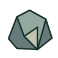
Minério Bruto
rawOreresource · mochila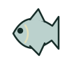
Lambari do Limiar
limiarMinnowresource · mochila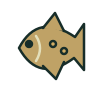
Carpa dos Vaga-lumes
fireflyCarpresource · mochila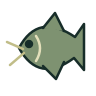
Bagre Musgoso
mossCatfishresource · mochila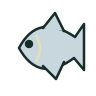
Peixe-Lua
moonFishresource · mochila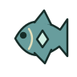
Peixe Rúnico
runeFishresource · mochila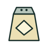
Sal
saltresource · mochila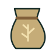
Farinha
flourresource · mochila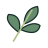
Ervas
herbsresource · mochila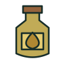
Óleo
oilresource · mochila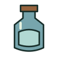
Água
waterresource · mochila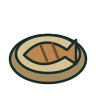
Lambari Assado
roastMinnowconsumable · mochila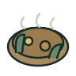
Ensopado do Limiar
limiarStewconsumable · mochila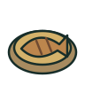
Carpa Dourada
goldenCarpconsumable · mochila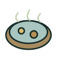
Sopa Lunar
lunarSoupconsumable · mochila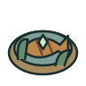
Prato Rúnico
runicDishconsumable · mochila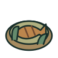
Bagre com Ervas
herbCatfishconsumable · mochila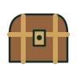
Baú
expeditionChestchest · mochila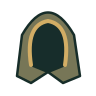
Capuz do Viajante
travelerCapequipment · head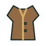
Colete do Viajante
travelerVestequipment · chest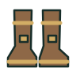
Botas do Viajante
travelerBootsequipment · boots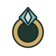
Anel de Foco
focusRingequipment · ring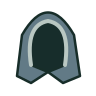
Capuz do Aprendiz
apprenticeHoodequipment · head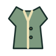
Colete Leve
lightVestequipment · chest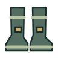
Botas Ágeis
agileBootsequipment · boots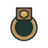
Anel de Força
strengthRingequipment · ring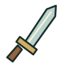
Espada de Treino
trainingSwordweapon · weapon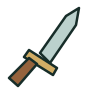
Adaga de Treino
trainingDaggerweapon · weapon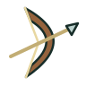
Arco de Treino
trainingBowweapon · weapon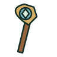